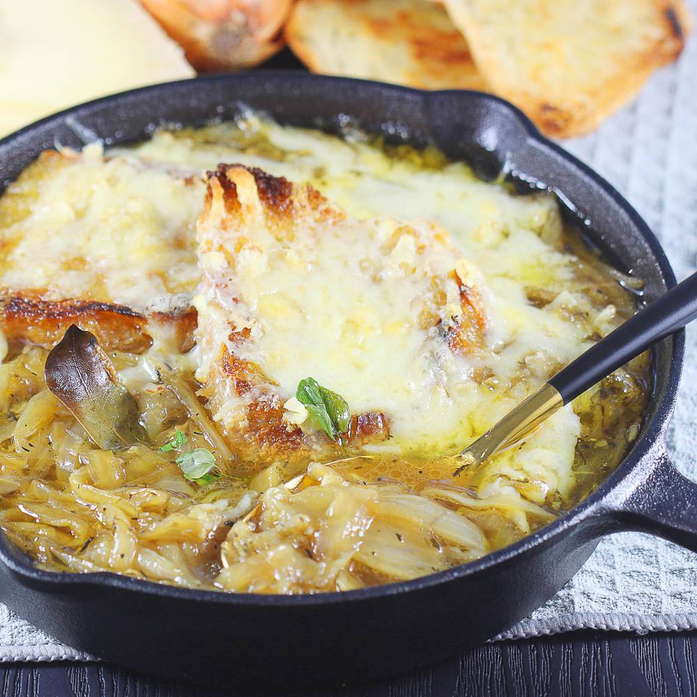

Onion Soup

Description
With just some onion, chicken stock and bread this hearty soup will bring you warmth and comfort during cold days.
Ingredients
- 1.5 kg of yellow onion
- Thyme
- Chicken stock
- Baguette
- Cheese
- Garlic
- Butter
Steps
- Chop the onionsand fry them with butter on low heat for about an hour until carmelised
- Chop up some garlic and add to the onion, fry for a minute
- Add chicken stock and boil for a few minutes
- Cut up a baguette and toast with butter, sprinkle with cheese
- Serve soup with cheesy baguette slices
Back